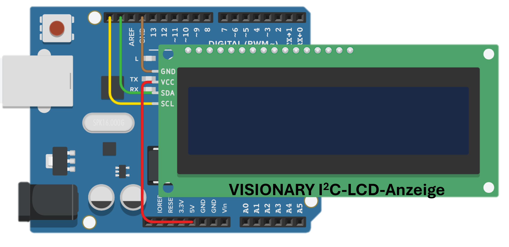

Arduino Verdrahtung
So wird unsere LCD über I2C mit dem Arduino verbunden.
Bild arduino_lcd_verdrahtung.png wird hier geladen.

So wird unsere LCD über I2C mit dem Arduino verbunden.
Bild arduino_lcd_verdrahtung.png wird hier geladen.
